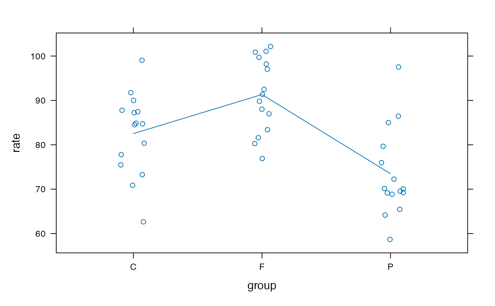
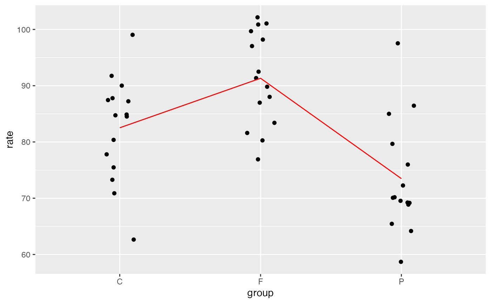

Does having a pet or a friend cause more stress?
Format
A data frame with 45 observations on the following 2 variables.
- group
a factor with levels
Control,Friend, orPet- rate
average heart rate while performing a stressful task
Source
K. M. Allen, J. Blascovich, J. Tomaka, and R. M. Kelsey, Presence of human friends and pet dogs as moderators of autonomic responses to stress in women, Journal of Personality and Social Psychology 61 (1991), no. 4, 582–589.
Details
Fourty-five women, all self-proclaimed dog-lovers, were randomly divided into three groups of subjects. Each performed a stressful task either alone, with a friend present, or with their dog present. The average heart rate during the task was used as a measure of stress.
References
These data also appear in
Brigitte Baldi and David S. Moore, The Practice of Statistics in the Life Sciences, Freeman, 2009.
Examples
data(PetStress)
#> Warning: data set ‘PetStress’ not found
xyplot(rate ~ group, data = PetStress, jitter.x = TRUE, type = c('p', 'a'))

gf_jitter(rate ~ group, data = PetStress, width = 0.1, height = 0) %>%
gf_line(group = 1, stat = "summary", color = "red")
#> No summary function supplied, defaulting to `mean_se()`
